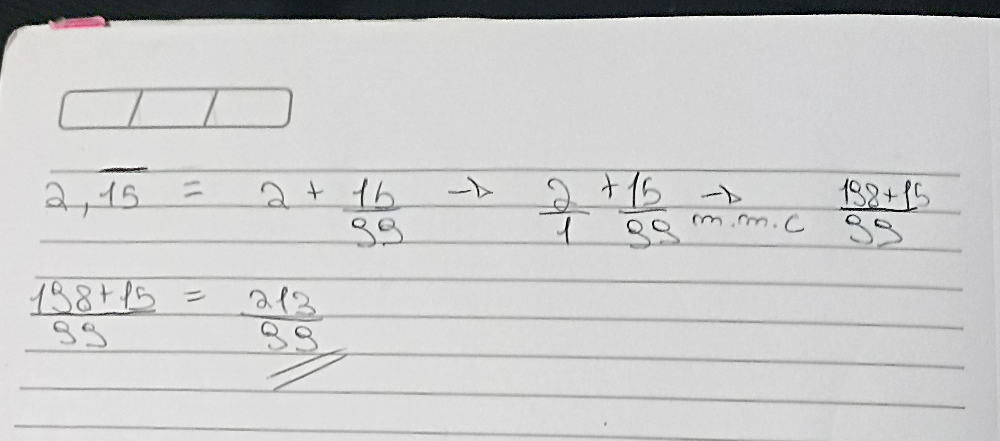
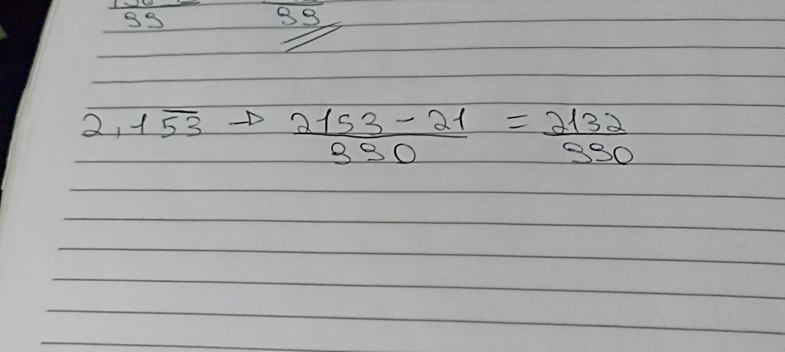

Dízimas Periódicas e Compostas
Neste conteúdo, veremos o que são dízimas periódicas, dízimas compostas, e como convertê-las para frações.
Dízimas Periódicas:
Resumidamente, dízimas periódicas são numeros que apresentam uma série infinita de algarismos decimais que, a partir de certo algarismo, se repetem em grupos de um ou mais algarismos, ordenados sempre na mesma disposição, chamados de período, por isso se chamam dízimas periódicas. As dízimas periódicas sempre irão acompanhar uma barrinha nos algarismos que se repetem, ou os três pontos no final.
Exemplos: 1,333333... ou 0,̅3
Conversão de Dízima Periódica para fração:
Para converter uma dízima periódica, utilizamos o seguinte método:
Sabemos que 2,151515... é a mesma coisa que 2 + 15/99 (99 pois 15 tem dois dígitos). Após escrevermos 2/1 + 15/99, devemos somar as frações. Após ter somado as frações, chegamos no resultado 213/99 e se dividirmos isso na calculadoran dará 2,151515...
Dízimas Compostas:
Agora iremos falar sobre a Dízima Periódica composta que, assim como a dízima periódica comum, também tem o período (algarismos que se repetem) porém antes do período possuem algarismos que não se repetem. Exemplo:
0,25̅3 (Perceba que a barra está apenas em cima do 53)
Conversão de Dízima Composta para fração:
A conversão de Dízimas Compostas para fração é muito simples, veja o exemplo:
Devemos fazer por partes. Primeiro, anotamos o número inteiro menos os números que não se repetem, como na foto. Para identificarmos o denominador, fazemos o seguinte: Depois da vírgula, para cada número que se repete acrescentamos o 9, e para cada número que não se repete, acrescentamos o 0, como na foto.